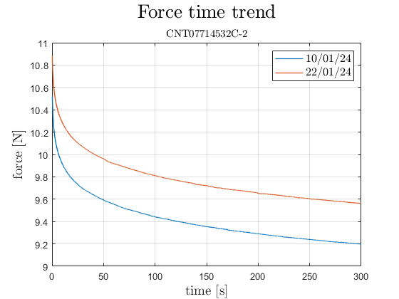
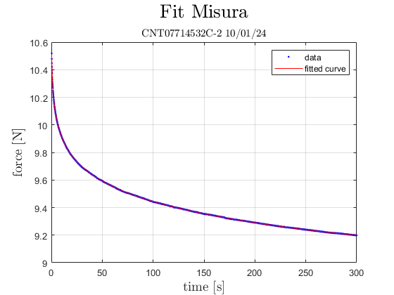
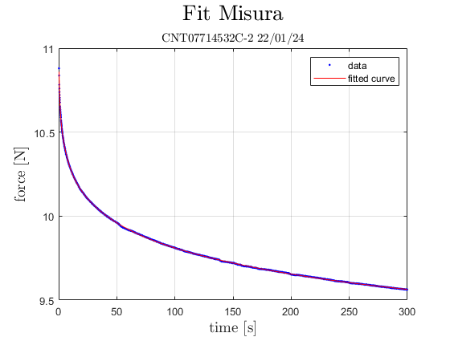

Contents
close all; clc; clear; % IN QUESTO SCRIPT SI VUOLE CONFRONTARE VISIVAMENTE E NUMERICAMENTE LE % PERDITE DOVUTE (SI SUPPONE) ALL'INVECCHIAMENTO DEI CENTRATORI % 07714532B-1/C-1 % si prende in esame per primo il C-1 spider = "07714532C-2"; % caricamento file acquisito in data 10/01/2024 file_2024_01_10 = "CREEP_2024_bis" + ... "\" + spider + ... "\Creep_5mm_" + spider +... "\Creep_5mm_"+ spider + ".txt"; % caricamento file acquisito in data 22/01/2024 file_2024_01_22 = "CREEP_1h_2024-01-22" + ... "\Creep_5mm_" + spider + "_1h" + ... "\Creep_5mm_" + spider + "_1h.txt"; % lettura dei file FID = fopen(file_2024_01_10); datacell_01_10 = textscan(FID, '%f%f%f', CommentStyle='#'); fclose(FID); FID = fopen(file_2024_01_22); datacell_01_22 = textscan(FID, '%f%f%f', CommentStyle='#'); fclose(FID); % estrazione asse dei tempi e valori di forza registrata time_ax_10 = datacell_01_10{1}/1000; force_ax_10 = -datacell_01_10{2}; time_ax_22 = datacell_01_22{1}/1000; force_ax_22 = -datacell_01_22{2}; % limitazione dell'asse temporale a 5 minuti time_ax_22 = time_ax_22(1:3000); force_ax_22 = force_ax_22(1:3000);
PULIZIA DEI DATI
si comincia elidendo i primi 4 campioni, che rappresentano il transitorio, dovuto si pensa all'inerzia del sistema. Una volta fatto quello si procede poi con l'eliminazione dei campioni che rappresentano un errore di lettura e sono inverosimilmente grandi o piccoli.
time_ax_10 = time_ax_10(4:end);
force_ax_10 = force_ax_10(4:end);
upper_bound_10 = force_ax_10(1) + 1;
lower_bound_10 = force_ax_10(end) - 1;
ind_to_delete_10 = find(force_ax_10>upper_bound_10 | force_ax_10<lower_bound_10);
time_ax_10(ind_to_delete_10) = [];
force_ax_10(ind_to_delete_10) = [];
% si ripete la procedura
time_ax_22 = time_ax_22(4:end);
force_ax_22 = force_ax_22(4:end);
upper_bound_22 = force_ax_22(1) + 1;
lower_bound_22 = force_ax_22(end) - 1;
ind_to_delete_22 = find(force_ax_22>upper_bound_22 | force_ax_22<lower_bound_22);
time_ax_22(ind_to_delete_22) = [];
force_ax_22(ind_to_delete_22) = [];
PLOTTING
figure() plot(time_ax_10, force_ax_10, LineWidth=1); hold on plot(time_ax_22, force_ax_22, LineWidth=1); grid on xlabel("time [s]", Interpreter="latex", FontSize=14) ylabel("force [N]", Interpreter="latex", FontSize=14) title("Force time trend", Interpreter="latex", FontSize=20) subtitle("CNT"+spider, Interpreter="latex", FontSize=11) legend(["10/01/24", "22/01/24"], Interpreter="latex", FontSize=12)
FIT
ora l'idea è di provare a fittare con 4 tempi di rilassamento le curve trovate e valutare in termini percentuali le perdite di ogni coefficiente del modello.
start_values = [2, 0.2, 0.2, 0.2, 0.2, 0.1, 1, 10, 100]; fit_func = @(f0,f1,f2,f3,f4,tau1,tau2,tau3,tau4,x)... f0+... f1*exp(-x/tau1)+... f2*exp(-x/tau2)+... f3*exp(-x/tau3)+... f4*exp(-x/tau4); coeffs_10 = fit(time_ax_10, force_ax_10, fit_func, ... 'StartPoint', start_values, ... 'Lower', [0.01, 0.01, 0.01, 0.01, 0.01, 0.01, 0.1, 0.1, 0.1], ... 'Upper', [80, 10, 10, 10, 10, 10, 25, 100, 1000], ... 'Robust', 'Off', ... 'Algorithm', 'Trust-Region', ... 'DiffMinChange', 1e-5, ... 'DiffMaxChange', 0.1, ... 'MaxFunEvals', 1e4, ... 'MaxIter', 1e4, ... 'TolFun', 1e-6); coeffs_22 = fit(time_ax_22, force_ax_22, fit_func, ... 'StartPoint', start_values, ... 'Lower', [0.01, 0.01, 0.01, 0.01, 0.01, 0.01, 0.1, 0.1, 0.1], ... 'Upper', [80, 10, 10, 10, 10, 10, 25, 100, 1000], ... 'Robust', 'Off', ... 'Algorithm', 'Trust-Region', ... 'DiffMinChange', 1e-5, ... 'DiffMaxChange', 0.1, ... 'MaxFunEvals', 1e4, ... 'MaxIter', 1e4, ... 'TolFun', 1e-6); % plot ora dei fit per una valutazione visiva figure() plot(coeffs_10, time_ax_10, force_ax_10) grid on xlabel("time [s]", Interpreter="latex", FontSize=14) ylabel("force [N]", Interpreter="latex", FontSize=14) title("Fit Misura", Interpreter="latex", FontSize=20) subtitle("CNT"+spider+" 10/01/24", Interpreter="latex", FontSize=11) figure() plot(coeffs_22, time_ax_22, force_ax_22) grid on xlabel("time [s]", Interpreter="latex", FontSize=14) ylabel("force [N]", Interpreter="latex", FontSize=14) title("Fit Misura", Interpreter="latex", FontSize=20) subtitle("CNT"+spider+" 22/01/24", Interpreter="latex", FontSize=11) 
VALUTAZIONE COEFFICIENTI
x_spost = 5e-3; % [m] coeff_array_10 = coeffvalues(coeffs_10)'; coeff_array_22 = coeffvalues(coeffs_22)'; force_fit_10 = coeff_array_10(1:5); force_fit_22 = coeff_array_22(1:5); tau_fit_10 = coeff_array_10(6:end); tau_fit_22 = coeff_array_22(6:end); % ordino gli array in modo che siano disposti in ordine crescente i tempi % di rilassamento [tau_10_sort, ii_10_sort] = sort(tau_fit_10, 'ascend'); [tau_22_sort, ii_22_sort] = sort(tau_fit_22, 'ascend'); force_10_sort = [force_fit_10(1);force_fit_10(ii_10_sort+1)]; force_22_sort = [force_fit_22(1);force_fit_22(ii_22_sort+1)]; % trovo le stiffness come k=F/x k_10 = force_10_sort./x_spost; k_22 = force_22_sort./x_spost; % trovo infine le resistenze come R=τ*k r_10 = coeff_array_10(6:end).*k_10(2:end); r_22 = coeff_array_22(6:end).*k_22(2:end); % valutazione della perdita percentuale loss_k = (1-(k_22./k_10))*100; loss_r = (1-(r_22./r_10))*100; clc disp("Spider: "+spider) disp(sprintf(strcat("k_0 ha perso il ",num2str(loss_k(1)),"%%, \tpassando da ", num2str(k_10(1)), " \t->\t ", num2str(k_22(1)), "\t [N/m]"))); disp(sprintf(strcat("k_1 ha perso il ",num2str(loss_k(2)),"%%, \tpassando da ", num2str(k_10(2)), " \t->\t ", num2str(k_22(2)), "\t [N/m]"))); disp(sprintf(strcat("k_2 ha perso il ",num2str(loss_k(3)),"%%, \tpassando da ", num2str(k_10(3)), " \t->\t ", num2str(k_22(3)), "\t [N/m]"))); disp(sprintf(strcat("k_3 ha perso il ",num2str(loss_k(4)),"%%, \tpassando da ", num2str(k_10(4)), " \t->\t ", num2str(k_22(4)), "\t [N/m]"))); disp(sprintf(strcat("k_4 ha perso il ",num2str(loss_k(5)),"%%, \tpassando da ", num2str(k_10(5)), " \t->\t ", num2str(k_22(5)), "\t [N/m]"))); disp(" ") disp(sprintf(strcat("r_1 ha perso il ",num2str(loss_r(1)),"%%, \tpassando da ", num2str(r_10(1)), " \t->\t ", num2str(r_22(1)), "\t [N*s/m]"))); disp(sprintf(strcat("r_2 ha perso il ",num2str(loss_r(2)),"%%, \tpassando da ", num2str(r_10(2)), " \t->\t ", num2str(r_22(2)), "\t [N*s/m]"))); disp(sprintf(strcat("r_3 ha perso il ",num2str(loss_r(3)),"%%, \tpassando da ", num2str(r_10(3)), " \t->\t ", num2str(r_22(3)), "\t [N*s/m]"))); disp(sprintf(strcat("r_4 ha perso il ",num2str(loss_r(4)),"%%, \tpassando da ", num2str(r_10(4)), " \t->\t ", num2str(r_22(4)), "\t [N*s/m]")));
Spider: 07714532C-2 k_0 ha perso il -4.1961%, passando da 1806.2118 -> 1882.0017 [N/m] k_1 ha perso il 7.4681%, passando da 67.9829 -> 62.9059 [N/m] k_2 ha perso il 4.9473%, passando da 64.9398 -> 61.727 [N/m] k_3 ha perso il -4.8525%, passando da 61.646 -> 64.6373 [N/m] k_4 ha perso il -0.56295%, passando da 123.3407 -> 124.035 [N/m] r_1 ha perso il 18.4626%, passando da 63.3573 -> 51.6598 [N*s/m] r_2 ha perso il 15.8175%, passando da 417.6106 -> 351.5549 [N*s/m] r_3 ha perso il 4.4509%, passando da 1978.6099 -> 1890.544 [N*s/m] r_4 ha perso il 6.0039%, passando da 28375.4631 -> 26671.8366 [N*s/m]